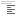

Een recente webbrowser met ondersteuning voor HTML5. Bij iedere release wordt de WebDRIP Designer getest in de op dat moment meest recente versie van Mozilla Firefox. De WebDRIP Designer werkt niet in Microsoft Internet Explorer 9 of ouder.
Er zijn uitgebreide mogelijkheden om teksten uit te lijnen. Enkele hiervan zijn bekend van tekstwerkers, anderen om eenvoudig teksten volgens de richtlijn te kunnen uitlijnen. De verschillende mogelijkheden worden hieronder toegelicht. Bij het uitlijnen wordt automatisch rekening gehouden met pictogrammen.
| Links | De linkerkant van de tekst wordt tegen de linkerkant van de beeldstand geplaatst. Als er een pictogram aan de linkerkant staat, begint de tekst twee pixels rechts van het pictogram. Als de tekst te lang is wordt deze aan de rechterkant afgekapt en overlapt een eventueel pictogram aan de rechterkant. | |
| Pijl links | De tekst wordt als blok uitgelijnd samen met andere regels met deze uitlijning. Deze regels starten op dezelfde afstand vanaf links. De pijl in een regel die met een pijl begint wordt links buiten het tekstblok geplaatst. Alleen de pijl in de eerst aangetroffen tekstregel met deze uitlijning wordt buiten het blok geplaatst. | |
| Centreren | Het midden van de tekst wordt in het midden van de beschikbare ruimte geplaatst. Als de tekst te lang is wordt deze aan beide kanten afgekapt en overlapt een eventueel pictogram. | |
| Pijl rechts | De tekst wordt als blok uitgelijnd samen met andere regels met deze uitlijning. Deze regels starten op dezelfde afstand vanaf links. Het blok wordt zo ver mogelijk rechts geplaatst. De pijl in een regel die met een pijl eindigt wordt rechts buiten het tekstblok geplaatst. Alleen de pijl in de eerst aangetroffen tekstregel met deze uitlijning wordt buiten het blok geplaatst. De regel met pijl wordt daarbij altijd volledig rechts uitgelijnd. | |
|  | Blok | De tekst wordt als blok uitgelijnd samen met andere regels met deze uitlijning. Deze regels starten op dezelfde afstand vanaf links. Het blok wordt zo ver mogelijk rechts geplaatst. Er is geen speciale afhandeling voor regels met een pijl. |
| Rechts | De rechterkant van de tekst wordt tegen de rechterkant van de beeldstand geplaatst. Als er een pictogram aan de rechterkant staat, eindigt de tekst twee pixels links van het pictogram. Als de tekst te lang is wordt deze aan de linkerkant afgekapt en overlapt een eventueel pictogram aan de linkerkant. |
Er is één samenwerkend blok per beeldstand. Het maakt niet uit of een regel tussendoor een andere uitlijning heeft. Het is niet aanbevolen om de uitlijningen Pijl links, Pijl rechts of Blok gelijktijdig te gebruiken in één beeldstand.
Klik op een beeldstand uit de historielijst om deze in de editor te laden. Door tussentijdse updates van de WebDRIP Designer kan het voorkomen dat de ingeladen beeldstand er anders uitziet dan het voorbeeld uit de historie.
De historielijst kan indien gewenst gefilterd worden. Dit kan middels het drop-down menu direct boven de kolom met meest recent gemaakte afbeeldingen aan de rechterkant. Kies voor de optie "van deze browser" om alleen beeldstanden te tonen die via de webbrowser zijn gemaakt die op dit moment wordt gebruikt. Zolang het in de browser geplaatste cookie niet wordt verwijderd wordt de historie over verschillende browsersessies heen getoond, anders wordt enkel de historie van de huidige browsersessie getoond. Wanneer voor de optie "van dit ip-adres" wordt gekozen, wordt de historie gefilterd op beeldstanden van alle gebruikers op hetzelfde IP-adres. Vaak wordt binnen een organisatie een enkel IP-adres gebruikt voor de externe internetverbinding, waardoor deze optie in de meeste gevallen ook de beeldstanden van collega's laat zien. Als voor de optie "alle beeldstanden" wordt gekozen, worden alle beeldstanden van alle gebruikers van de WebDRIP Designer getoond. De gekozen filteroptie is van toepassing op de kolom met meest recent gemaakte afbeeldingen en gelijktijdig ook op het venster met de volledige historie.
Wegnummers, afritnummers en omleidingsroutes kunnen in een kader worden weergegeven, om deze voor de weggebruiker makkelijker herkenbaar te maken. Dit worden tegeltjes genoemd. Tegeltjes zijn niet beschikbaar voor BermDRIP Type 3.
Portugese tegeltjes
Een Portugees tegeltje is een wegnummer, CAR-nummer of afritnummer in een rechthoekig kader.
Via de interface kan een Portugees tegeltje worden ingevoegd door een wegnummer of CAR-nummer in te voeren in het vakje:  . Een geldig wegnummer is een A, E, N of s gevolgd door één tot drie cijfers. Een geldig CAR-nummer is een U gevolgd door één tot drie cijfers. Bevestig met de entertoets of de link invoegen. Een portugees tegeltje met afritnummer kan worden ingevoerd via het vakje:
. Een geldig wegnummer is een A, E, N of s gevolgd door één tot drie cijfers. Een geldig CAR-nummer is een U gevolgd door één tot drie cijfers. Bevestig met de entertoets of de link invoegen. Een portugees tegeltje met afritnummer kan worden ingevoerd via het vakje:  . Een geldig afritnummer bestaat uit één tot drie cijfers. Het laatste cijfer kan ook een kleine letter zijn. Bevestig met de entertoets of de knop .
. Een geldig afritnummer bestaat uit één tot drie cijfers. Het laatste cijfer kan ook een kleine letter zijn. Bevestig met de entertoets of de knop .
In de bewerkbare tekstregels wordt een Portugees tegeltje weergegeven als het wegnummer of CAR-nummer tussen rechte haken. In plaats van het afritsymbool wordt de kleine letter a gebruikt. Portugese tegeltjes kunnen ook direct op deze manier in de tekstregels worden ingevoegd.
Stadsroutenummers
Naast Portugese tegeltjes kunnen voor stadsroutes de kenmerkende spoelvorm worden gebruikt.
Via de interface kan een stadsroutenummer worden ingevoegd via het vakje . Een geldig stadsroutenummer is een getal tussen 100 en 999. Bevestig met de entertoets of de knop .
In de bewerkbare tekstregels wordt een stadsroutenummer weergegeven als het wegnummer tussen accolades. Stadsroutenummers kunnen ook direct op deze manier in de tekstregels worden ingevoegd.
Omleidingen
Om omleidingsroutes aan te geven kunnen ook speciale omleidingstegeltjes gebruikt worden. Deze tegeltjes gebruiken dezelfde herkenbare sjabloon als de bekende gele omleidingsbordjes. De tegeltjes zijn beschikbaar in drie oriëntaties: links, rechts en omhoog.
Via de interface kan een omleidingstegeltje worden ingevoegd door een hoofdletter of cijfer in te voeren in het vakje met de gewenste richting:  ,
,  of
of  . Bevestig met de entertoets of de knop .
. Bevestig met de entertoets of de knop .
In de bewerkbare tekstregels wordt een omleidingstegeltje weergegeven als het tussen puntige haken (<, > of ^). Omleidingstegeltjes kunnen ook direct op deze manier in de tekstregels worden ingevoegd.
Er kan een lege tekstregel worden ingevoegd met de knoppen . De aangegeven tekstregel en eventuele tekstregels erna worden naar beneden verplaatst en er wordt een lege regel ingevoegd op de aangegeven plaats. De laatste tekstregel komt te vervallen. Ook kan een tekstregel worden verwijderd met de knoppen achter de tekstregels. De aangegeven tekstregel wordt verwijderd en eventuele tekstregels erna worden naar boven verplaatst. Aan het einde wordt een lege tekstregel aangevuld.
Een tekstregel kan in een keer leeg gemaakt worden middels de knop achter de betreffende tekstregel.
Sommige templates hebben ruimte voor twee pictogrammen. Als dit het geval is verschijnen de knoppen en onder de lijst met beschikbare pictogrammen. Gebruik deze knoppen om het actieve pictogram te selecteren. Het kiezen van een pictogram en het wissen van een pictogram hebben alleen betrekking op het actieve pictogram. Als het gekozen template maar één pictogram ondersteunt worden de hiervoor genoemde knoppen niet weergegeven.
Als er in het geselecteerde template tekst naast het pictogram geplaatst kan worden, kan door middel van de knoppen en gekozen worden of het tweede pictogram aan de rechterkant van de beeldstand of aan de linkerkant naast het eerste pictogram wordt geplaatst. Wanneer er geen tekst naast de pictogrammen kan staan, worden de pictogrammen altijd op een kwart en op driekwart van de breedte uitgelijnd en hebben de bedoelde knoppen geen effect.
Middels de template editor kunnen de voorgedefinieerde templates bewerkt worden, wanneer deze net even niet goed uit komen. Klik op de weergegeven templatespecificatie (pixelafmetingen, aantal regels, lettertype, pictogramgrootte) rechts naast de templateselectie. In het geopende venster kunnen vervolgens alle eigenschappen van het actieve template aangepast worden. De wijzigingen zijn direct zichtbaar. Aangepaste template-eigenschappen kunnen niet worden opgeslagen.
WebDRIP Designer controleert gemaakte beeldstanden automatisch op een aantal veelvoorkomende afwijkingen op de CROW-"Richtlijn informatievoorziening op dynamische informatiepanelen". Er worden aanbevelingen gegeven wanneer de richtlijn mogelijk niet correct wordt toegepast. Hiervoor worden de ingevoerde teksten getoetst aan 27 verschillende criteria. Wanneer een tekstregel niet voldoet aan meerdere criteria, dan wordt slechts één aanbeveling getoond. Beeldstanden waarvoor één of meerdere aanbevelingen gedaan worden kunnen wel gewoon worden gedownload. In sommige gevallen kan het voorkomen dat een aanbeveling getoond wordt terwijl de beeldstand wel correct is. In dergelijke gevallen wordt het zeer gewaardeerd als deze gemeld worden, zodat deze functionaliteit verbeterd kan worden. Zie het venster Over de WebDRIP Designer voor contactgegevens. Niet alle afwijkingen op de richtlijn worden gedetecteerd, goed begrip van de richtlijn is nog altijd aanbevolen!